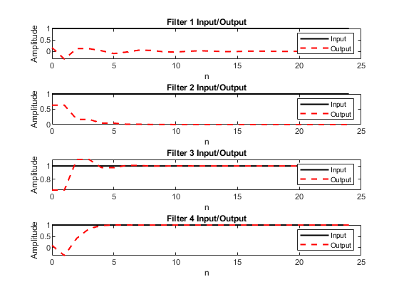
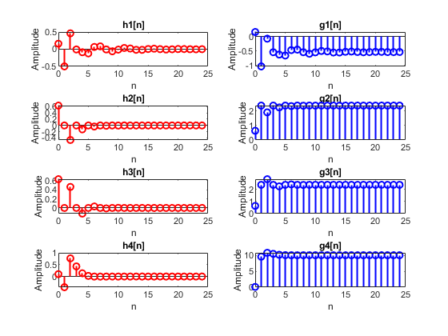
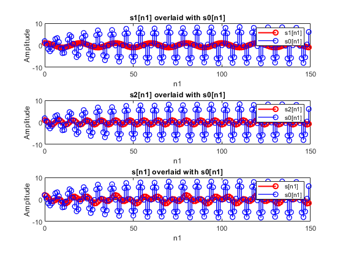
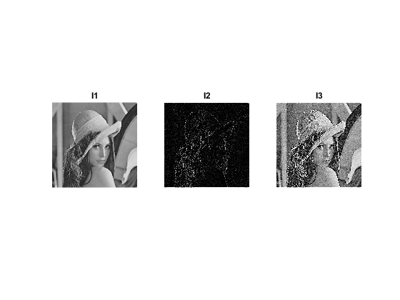

Contents
function [b1,b2,b3,b4,a1,a2,a3,a4,x,y,t,h1,h2,h3,h4,g1,g2,g3,g4,Same,s1,s2,s,so,Rejected,I1,I2,I3]=fname2
% De La Salle University % Electronics and Computer Engineering Department % % Course : LBYCPA4 % SECTION : EQ4 % Submitted by : Jared Ong % Submitted to : Dr. Edwin Sybingco % % Exercise 2 : Discrete-time Systems % % Note: Check the instructions given in canvas
Task 1
%Encode the corresponding numerator coefficients and denominator %coefficients of the rational transfer functions of the causal LTI systems % Use the following variables for the numerator coefficients: b1, b2, b3, and b4 % Use the following variables for the denominator coefficients: a1, a2, a3, and a4 b1 = [0.16, -0.48, 0.48, -0.16]; a1 = [1, 0.13, 0.52, 0.3]; b2 = [0.634, 0, -0.634]; a2 = [1, 0, -0.268]; b3 = [0.634, 0, 0.634]; a3 = [1, 0, 0.268]; b4 = [1, -5, 10]; a4 = [10, -5, 1];
Task 2
Generate the signal x
n = 0:24; % Time index wo = [0, pi/4, pi/2, 3*pi/4, pi]; % Frequency values % Create the matrix x for sinusoidal sequences x = zeros(length(n), length(wo)); % Preallocate matrix for efficiency for i = 1:length(wo) x(:,i) = cos(wo(i)*n); % Fill each column with the respective cosine wave end
Generate the output sequences y for each filter
y = zeros(length(n), length(wo), 4); % Preallocate matrix for outputs % Apply filter 1 (system a) for i = 1:length(wo) y(:,i,1) = filter(b1, a1, x(:,i)); end % Apply filter 2 (system b) for i = 1:length(wo) y(:,i,2) = filter(b2, a2, x(:,i)); end % Apply filter 3 (system c) for i = 1:length(wo) y(:,i,3) = filter(b3, a3, x(:,i)); end % Apply filter 4 (system d) for i = 1:length(wo) y(:,i,4) = filter(b4, a4, x(:,i)); end
Visualization of input/output for the four filters
figure;
for i = 1:4
subplot(4,1,i); % Create a subplot for each filter
plot(n, x(:,1), 'k', 'LineWidth', 1.5); hold on; % Input signal (first column of x)
plot(n, y(:,1,i), '--r', 'LineWidth', 1.5); % Output for filter i
title(['Filter ' num2str(i) ' Input/Output']);
xlabel('n');
ylabel('Amplitude');
legend('Input', 'Output');
hold off;
end
 Determine the type of filter
Based on the visualization, you can now manually categorize the filters.
% Complete the table with filter types t = table([1;2;3;4], 'VariableNames', {'FilterNumber'}); t.FilterType(1) = {'lowpass'}; % Example entry t.FilterType(2) = {'highpass'}; % Example entry t.FilterType(3) = {'bandpass'}; % Example entry t.FilterType(4) = {'bandstop'}; % Example entry disp(t);
FilterNumber FilterType
____________ ____________
1 {'lowpass' }
2 {'highpass'}
3 {'bandpass'}
4 {'bandstop'}
Task 3
% Impulse input n = 0:24; % Time index impulse = [1; zeros(24, 1)]; % Impulse input: δ[n] % Generate the impulse response h1, h2, h3, and h4 using the filter function h1 = filter(b1, a1, impulse); % System 1 h2 = filter(b2, a2, impulse); % System 2 h3 = filter(b3, a3, impulse); % System 3 h4 = filter(b4, a4, impulse); % System 4 % Generate g1, g2, g3, and g4 using partial fraction expansion (residuez) g1 = zeros(size(n)); g2 = zeros(size(n)); g3 = zeros(size(n)); g4 = zeros(size(n)); % For g1 (system 1) [r1, p1, k1] = residuez(b1, a1); % Partial fraction expansion for i = 1:length(r1) g1 = g1 + r1(i) * (p1(i).^n); % Sum the contribution of each residue/pole end g1 = g1 + k1; % Add direct term if any % For g2 (system 2) [r2, p2, k2] = residuez(b2, a2); for i = 1:length(r2) g2 = g2 + r2(i) * (p2(i).^n); end g2 = g2 + k2; % For g3 (system 3) [r3, p3, k3] = residuez(b3, a3); for i = 1:length(r3) g3 = g3 + r3(i) * (p3(i).^n); end g3 = g3 + k3; % For g4 (system 4) [r4, p4, k4] = residuez(b4, a4); for i = 1:length(r4) g4 = g4 + r4(i) * (p4(i).^n); end g4 = g4 + k4; % Compare hi and gi for i = 1, 2, 3, 4. Store the result in the variable Same. % Same is a 1x4 vector. The values are either 1 (same) or 0 (not same). Same = zeros(1, 4); % Preallocate comparison result Same(1) = isequal(h1, g1); % Compare h1 and g1 Same(2) = isequal(h2, g2); % Compare h2 and g2 Same(3) = isequal(h3, g3); % Compare h3 and g3 Same(4) = isequal(h4, g4); % Compare h4 and g4 % Display the comparison results disp('Comparison Results (Not Same):'); disp(Same); % 1 for same, 0 for not same % Create the visualization of figure 2 figure; % h1[n] and g1[n] subplot(4, 2, 1); stem(n, h1, 'r', 'LineWidth', 1.5); title('h1[n]'); xlabel('n'); ylabel('Amplitude'); subplot(4, 2, 2); stem(n, g1, 'b', 'LineWidth', 1.5); title('g1[n]'); xlabel('n'); ylabel('Amplitude'); % h2[n] and g2[n] subplot(4, 2, 3); stem(n, h2, 'r', 'LineWidth', 1.5); title('h2[n]'); xlabel('n'); ylabel('Amplitude'); subplot(4, 2, 4); stem(n, g2, 'b', 'LineWidth', 1.5); title('g2[n]'); xlabel('n'); ylabel('Amplitude'); % h3[n] and g3[n] subplot(4, 2, 5); stem(n, h3, 'r', 'LineWidth', 1.5); title('h3[n]'); xlabel('n'); ylabel('Amplitude'); subplot(4, 2, 6); stem(n, g3, 'b', 'LineWidth', 1.5); title('g3[n]'); xlabel('n'); ylabel('Amplitude'); % h4[n] and g4[n] subplot(4, 2, 7); stem(n, h4, 'r', 'LineWidth', 1.5); title('h4[n]'); xlabel('n'); ylabel('Amplitude'); subplot(4, 2, 8); stem(n, g4, 'b', 'LineWidth', 1.5); title('g4[n]'); xlabel('n'); ylabel('Amplitude');
Comparison Results (Not Same):
0 0 0 0
 Task 4
n1 = 0:149; % Time index % Generate s1[n1], s2[n1], and s[n1] as defined s1 = cos((pi/10) * n1); s2 = cos((pi/4) * n1); s = s1 + s2; % Define the filter coefficients for the Notch filter based on the given transfer function H(z) b = [0.9543 -1.9086 0.9543]; % Numerator coefficients a = [1 -1.9*cos(pi/4) 0.9025]; % Denominator coefficients % Apply the notch filter to s[n1] to get s0[n1] s0 = filter(b, a, s); % Answer the question: Which of the sequences is rejected by the Notch filter (s1 or s2)? % The notch filter is designed to reject the frequency corresponding to s2[n1] (cos(pi/4 * n1)) Rejected = 's2'; % The Notch filter rejects s2 % Display the rejected signal disp(['The rejected signal is: ', Rejected]);
The rejected signal is: s2
Visualization (Figure 3)
figure;
% s1[n1] overlaid with s0[n1]
subplot(3, 1, 1);
stem(n1, s1, 'r', 'LineWidth', 1.5); hold on;
stem(n1, s0, 'b', 'LineWidth', 1); hold off;
title('s1[n1] overlaid with s0[n1]');
xlabel('n1'); ylabel('Amplitude');
legend('s1[n1]', 's0[n1]');
% s2[n1] overlaid with s0[n1]
subplot(3, 1, 2);
stem(n1, s2, 'r', 'LineWidth', 1.5); hold on;
stem(n1, s0, 'b', 'LineWidth', 1); hold off;
title('s2[n1] overlaid with s0[n1]');
xlabel('n1'); ylabel('Amplitude');
legend('s2[n1]', 's0[n1]');
% s[n1] overlaid with s0[n1]
subplot(3, 1, 3);
stem(n1, s, 'r', 'LineWidth', 1.5); hold on;
stem(n1, s0, 'b', 'LineWidth', 1); hold off;
title('s[n1] overlaid with s0[n1]');
xlabel('n1'); ylabel('Amplitude');
legend('s[n1]', 's0[n1]');
 Task 5
Load the grayscale image lena_gray.tiff
I = imread("lena_gray.tiff"); % Define the convolution kernels (filters) h1 = [-1 -1 -1; -1 8 -1; -1 -1 -1]; % Filter h(:,:,1) h2 = [-1 -1 -1; -1 9 -1; -1 -1 -1]; % Filter h(:,:,2) h3 = [0 1 2; -1 0 1; -2 -1 0]; % Filter h(:,:,3) % Apply filter2 with 'same' option to keep the output size the same as the input I1 = filter2(h1, I, 'same'); I2 = filter2(h2, I, 'same'); I3 = filter2(h3, I, 'same'); % Convert the output images to uint8 I1 = uint8(I1); I2 = uint8(I2); I3 = uint8(I3); % Original and filtered images figure; subplot(1, 3, 1); imshow(I); title('I1'); subplot(1, 3, 2); imshow(I1); title('I2'); subplot(1, 3, 3); imshow(I2); title('I3');
end
ans =
0.1600 -0.4800 0.4800 -0.1600